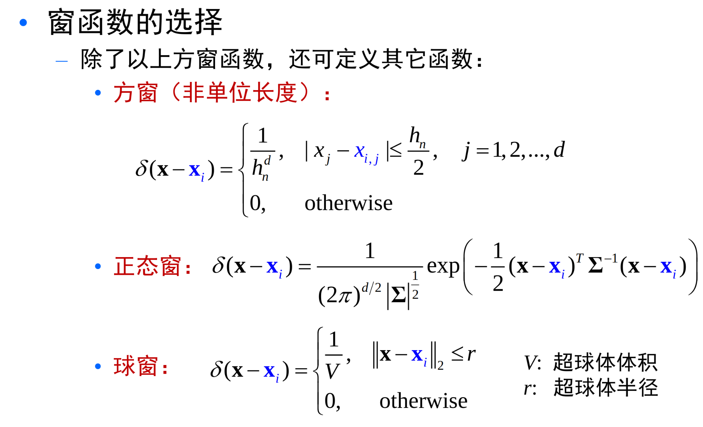
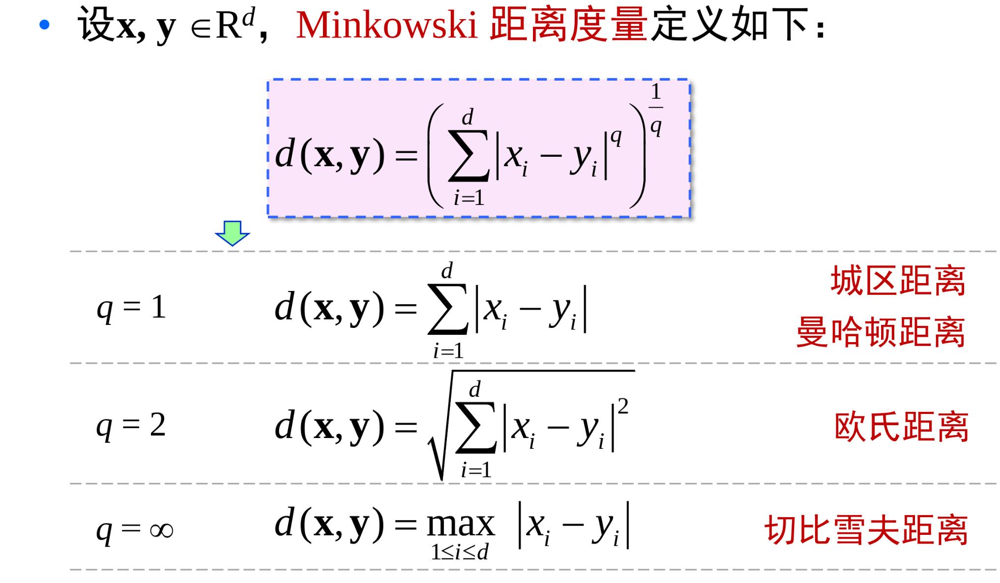

非参数估计
最大似然方法和贝叶斯估计均属于参数估计方法：待估计的概率密度函数的形式已知
但是很多情况下，我们对样本的分布没有充分的了解，无法事先给出概率密度函数的具体形式， 而且有些样本的分布也很难用简单的函数来描述。
非参数估计方法不需要对概率密度函数的形式作任何假设。
直方图方法
- 将特征空间每个维度特征分为\(l\) 个等间隔的小窗，每个小窗体积为 \(V\)。
- 统计落入每个小舱的样本数目 \(k_i\)。
- 将小舱内的概率密度视为常数，并用 \(\frac{k_i}{nV}\) 作为其估计值。
\(\frac{k}{n}\) 是对 概率P的一个很好的估计。另一个方面，假设p(X)连续，且小区域R的体积足够小，可以假定 在该小区域中p（x）是常数，于是可以估计 \(p(X) = \frac{k}{nV}\)。
应该保证随着样本数目的增加，小舱的体积应该尽可能小，同时又必须保证小舱内有充分多的样本，但每个小舱内的样本有是总数的很小一部分。
\(\lim_{n \to \infty} V_n = 0; lim_{n \to \infty} k_n = \infty ; lim_{n \to \infty} \frac{k_n}{n} = 0\)。
有两种方法
- Parzen window ：固定局部区域体积V，k变化。\(V_n = \frac{1}{\sqrt{n}}\)。可以看出当样本总数n固定时，这个区间大小就固定了。
- k-nearest neighbor ： 固定局部样本数k，V变化。\(k = \sqrt{n}\)。可以看出当样本总数n固定时，这个区件内的点数目确定了。
Parzen 窗方法
假设小舱是一个超立方体，体积为 \(V_n = (h_n)^{d}\)。
定义一下d维单位方窗函数 \(\varphi (u) = 1, when ｜u_j｜\le \frac{1}{2}, j = 1,2,...,d\)
那么对于点 x，考察样本 \(x_i\) 是否在以x为中心，\(h_n\) 为棱长的立方体内，可以通过函数 \(\varphi (\frac{x - x_i}{h_n})\)
那么可以得到所有落入超立方体样本总数 \(k_n = \sum_i \varphi (\frac{x - x_i}{h_n})\)
从而有 \(p_n(x) = \frac{k_n}{nV} = \frac{1}{n} \sum_i \frac{1}{V_n} \varphi (\frac{x - x_i}{h_n})\)
于是定义 \(\delta _n (x) = \frac{1}{V_n} \varphi (\frac{x}{h_n})\)
那么 \(p_n(x) = \frac{1}{n} \sum_i \delta _n(x - x_i)\)
要保证 \(p_n(x)\) 是一个概率密度函数，那么需要保证 \(\delta (x) > 0 , 积分为1\)
通常 \(\delta _n(x - x_i)\) 反映了样本 \(x_i\) 对在x处概率密度估计贡献的大小，通常与 \(x_i\) 到x 的距离有关。
概率密度就是将所有观测点在x点的贡献进行平均。
可以选择多种窗函数

Parzen算法特点
适用范围广，无论概率函数是规则的或者是不规则的、单峰的还是多峰的
样本数趋于无穷时， \(parzen\) 窗估计收敛于真实 \(p(X)\)
该方法要求样本的数量要大。
选择合适的窗口函数将有利于提高估计的精度和减小样本数量
与直方图仅仅在每个固定小窗口内估计不同，用滑动的小窗口来估计每个点上的概率密度。
k 邻接估计
在parzen窗估计中，小窗口体积视为样本总数函数。\(v_n = \frac{v_1}{n}\)
当\(v_1\) 选择得太小，导致大部分是空的，会使得概率不稳定。当选的太大，概率会变得过于平坦，从而失去重要的空间变化。
所以选择k邻接，克服这些问题。
K邻接是采用大小可变舱的密度估计方法。
根据总样本数确定一个参数 \(k_n\) ，要求每个小舱内拥有的样本数目是 \(k_n\)。
在估计\(x\) 处的概率密度\(p(X)\) 时，调整包含\(x\)的小舱的体积，直到小舱内恰好落入\(k_n\)个样本：\(p_n(x) = \frac{k_n}{n V_n}\)
同样，要保证 \(lim_{n \to \infty} k_n = \infty ;lim_{n \to \infty} \frac{k_n}{n} = 0\)
关键是如何计算 \(V_n\) 。对于多维情况下，可以使用立方体包围盒：\(p_n(X) = \frac{k_n}{2^d n \prod |x^i - x_{kNN}^i|}\)
注意这里分母是乘了一个2，说明是要对称，就是第k小距离然后对称也要包括
最近邻分类器
最近邻近样本，有理由相信它们的类别相同，或者类后验概率相同。
决策规则 \(g_i (x) = max -d(x,x_j)\)。
最近邻分类器的错误率是很接近贝叶斯分类器错误率。
有结论，最近邻法的渐进错误率最坏不会超过两倍的贝叶斯错误率，而最好则有可能接近或达到贝叶斯错误率。
一种改进就是引入投票机制，选择前k个距离测试样本最近的训练样本，来决定新样本的类别。找到在k近邻中出现类别最多的。
距离度量
距离一般满足如下几个条件。非负性: \(d(x,y) \ge 0\) ；自相似性:\(d(x,x) =0\)；对称性：\(d(x,y) = d(y,x)\)；三角不等式：\(d(x,y) \le d(x,z) + d(z,y)\)。
距离可以描述点对间的相异程度。

距离是对坐标变换敏感的。我们希望找到对给定变换具有不变性的距离度量。
那么定义一个距离是在所有变换下的最小值，这样就找到了对变换具有不变性的值。
距离度量学习，使得在特定任务中相似的样本在特征空间中更接近，不相似的样本则更远离。